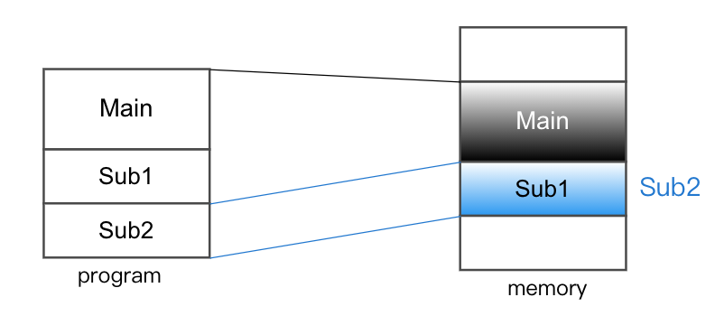

Chapter3-作業系統-虛擬記憶體-part1
3.8 虛擬記憶體 (Virtual Memory)
- 目的：允許 program size > physical memory size, 而程式仍能執行
- 作法：(部分載入) => 有需要才載入
方法：
1. Dynamic Loading => 為 programmer 的負擔
2. Virtual Memory => 為 O.S. 的負擔
目錄
- Dynamic Loading 動態載入
- Virtual Memory
- Virtual Memory Definition
- Virtual Memory實施方式
- Demand Paging
- Demand Segment
- Page Fault 處理
- Virtual Memory Performance 評估
- P 的影響因素
- frame 數量
- page size 大小
- Program Structure
- Page Replacement algorithm
- FIFO
- OPT
- LRU
- LRU 近似法則
- Frequency of reference
- Demand Paging 的問題：「Thrashing」猛移/輾轉
Dynamic Loading 動態載入
- 執行之初只載入所需的部分頁面
- 當 subroutine 被呼叫時, 再將之載入到其他不需用的 subroutine 的所在位址, 以 覆寫 利用原 Memory space => 為 Overlay 之技巧
- 圖：
Virtual Memory
- 圖：

Virtual Memory Definition
- 正在執行中的區塊才載入 Memory
- 將 Logical 和 Physical address 分開且 Logical 可大於 Physical 之 address
- 在系統會於 次儲存媒體(主要 storage 為 main memory, 次要為 disk or CD-ROM)挪用一塊空間模擬(swap space)成 Memory
- 執行時允許動態的 swap in/out
- 優點：
- Program 不受限於 physical memory
- Programmer 可專心寫程式即可
- 各 process 佔用 memory space 下降 =>可列入更多 process, 即 Multiprogramming Degree 上升
- 單次 I/O 量下降, 但 I/O 次數上升(缺),存取效能下降(因為需I/O)(缺)